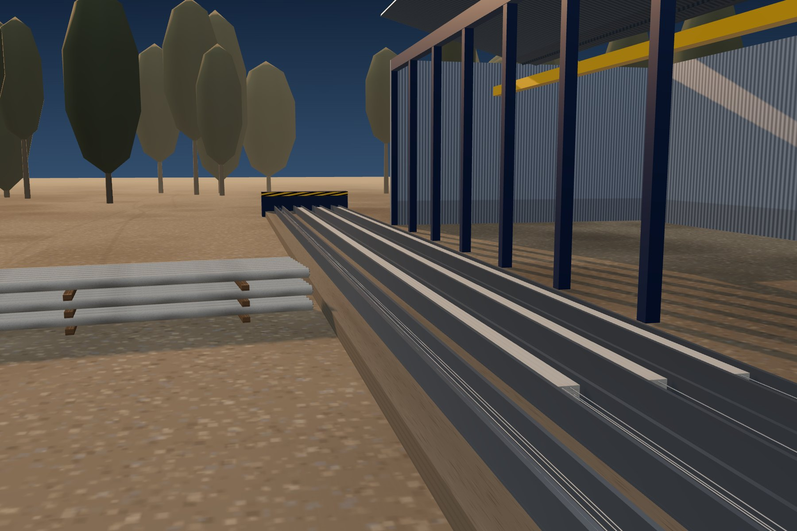

FAQ
Perguntas frequentes.
Respostas técnicas sobre estacas pré-fabricadas, cravação e controle de qualidade.
01Quais são as principais vantagens das estacas pré-fabricadas em relação às moldadas in loco?
A principal vantagem é o controle tecnológico industrial. Diferente das estacas moldadas no solo, as pré-fabricadas IPR são fabricadas em ambiente controlado, eliminando riscos de descontinuidade do fuste, contaminação do concreto ou estrangulamento por pressão do solo. Além disso, permitem a verificação imediata da capacidade de carga por meio da “nega” durante a cravação.
02Como é garantida a resistência do concreto (fck) das estacas?
A resistência é garantida por meio de uma Central de Concreto automatizada e um rigoroso monitoramento laboratorial. Coletamos amostras de cada lote para ensaios de compressão em períodos de 24h, 3, 7 e 28 dias. Esse controle assegura que o concreto suporte tanto as tensões de cravação quanto as cargas permanentes da estrutura.
03É possível emendar as estacas se a profundidade do projeto for maior que 10 metros?
Sim. Nossas estacas são equipadas com anéis de emenda metálicos de alta precisão. Esse sistema permite a união soldada de diferentes segmentos, garantindo a verticalidade e a continuidade estrutural da fundação, mesmo em grandes profundidades.
04O processo de cravação gera resíduos no canteiro de obras?
Praticamente nenhum. Por ser um método de deslocamento (e não de escavação), não há retirada de terra, geração de lama bentonítica ou sobras de concreto. Isso torna o canteiro da IPR mais limpo, organizado e sustentável.
05Qual a diferença entre o concreto comum e o concreto protendido usado pela IPR?
O concreto protendido recebe tensões internas por meio de cordoalhas tracionadas antes da concretagem. Isso confere à estaca uma maior resistência à flexão durante o transporte e o içamento, além de reduzir a porosidade e aumentar a proteção das armaduras contra a corrosão em solos agressivos.
06A IPR realiza o transporte das estacas até a obra?
Sim. Possuímos frota própria de veículos pesados e equipes especializadas em logística de elementos pré-moldados. Isso garante que o manuseio e o transporte ocorram de forma técnica, evitando danos às peças e assegurando o cumprimento do cronograma de entrega.
07Como saber se a estaca atingiu a profundidade e carga necessárias?
O controle é feito em tempo real durante a cravação por meio da medição da “nega” (penetração final para um número determinado de golpes) e do repique elástico. Esses dados, confrontados com o projeto de engenharia, validam se a estaca atingiu a camada de solo com a resistência prevista.
08As estacas pré-fabricadas podem ser utilizadas em qualquer tipo de solo?
As estacas pré-fabricadas de concreto são extremamente versáteis e indicadas para a grande maioria dos perfis geotécnicos, sendo especialmente eficientes em solos arenosos, argilosos e siltosos. No entanto, a viabilidade técnica depende sempre da análise prévia do Relatório de Sondagem (SPT).
Nenhuma pergunta encontrada. Envie sua dúvida para a nossa engenharia.
Orçamento técnico
Pronto para elevar o nível da sua fundação?
Fale com nossos especialistas e solicite um orçamento técnico para o seu projeto. Envie a sondagem SPT e as cargas de projeto para agilizar a análise.